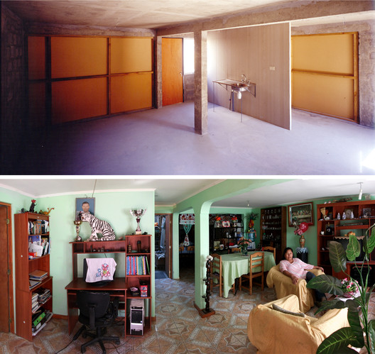

02 / Design
The Void
The structural skeleton delivered by Elemental — everything a family cannot build themselves. The other half waits.

Q2 — How did context affect its design?
Half a Good
House
With $7,500 and land costing three times the standard allocation, Elemental couldn’t build a complete house. Architect Alejandro Aravena reframed the question: “What if 36 m² is not a small house, but half of a good one?”
Elemental built the “difficult half” — reinforced concrete frame, foundation, roof, kitchen, bathroom, staircase, all infrastructure. They left the other half as a structural void. They called it “middle-class DNA” — housing designed to grow into a 72 m² middle-class home, not shrink into a depreciating box.
- 34 Ground-Floor Units 36 m² → 70 m²
- 59 Upper-Floor Duplexes 36 m² → 72 m²
- 4 Shared Courtyards Preserving social bonds